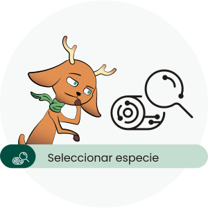
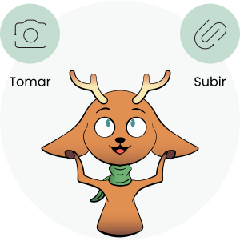
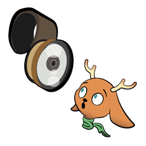
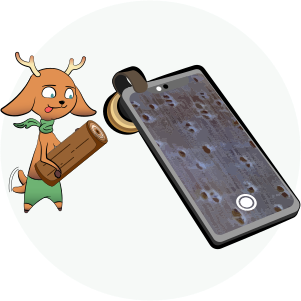

Cómo realizar análisis
Por medio de una inteligencia artificial, WoodTracer analiza muestras fotográficas de trozos de madera y las compara con la especie de madera objetivo, con el fin de crear el índice de acierto.
Comienza el análisis
Toca el botón de “análisis” en la barra de navegación:
Crea uno nuevo o continua uno previo
Puedes elegir si crear un nuevo análisis o continuar el análisis más reciente sin finalizar. Ten en cuenta que si creas un nuevo análisis, el previo que no hayas guardado será eliminado.
Toma o sube una foto
Recuerda utilizar la lupa al momento de tomar la muestra fotográfica de la madera.
Añade o elimina muestras del reporte
De ser requerido, puedes añadir o eliminar muestras analizadas del reporte.
Crear el reporte